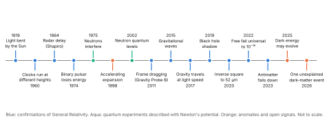
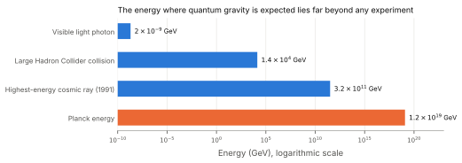
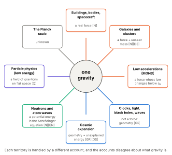

Library › The Unified Framework for the Graviton Pressure Theory
From Newton to GPT
The Evolution of Gravitational Understanding: A Century of Advances, and What Still Does Not Fit
About This Paper
This paper tells the story of gravity from Newton to the present. Newton described its effects without a cause. Einstein replaced force with geometry, again without a cause. Much has happened since 1916, and the story is carried forward here to 2026.
It records the great confirmations of the last century, because they are real and must be stated plainly. It records, just as plainly, the places where the story does not fit: the matter that has never been found, the energy that cannot be explained, the measurements that disagree, and above all the failure, after nearly a century of effort, to join gravity to quantum theory.
And it draws out one thing more. Gravity today is not explained by one theory. It is handled by several, each assigned its own territory—Newton for the engineer and the galaxy, Einstein for the clock and the black hole, quantum mechanics for the falling neutron, particle physics for the hypothetical graviton, unseen matter and energy for the rest. The borders between these territories are not features of nature. They are features of our explanations. Gravity does not change what it is when a calculation changes hands.
Claims about Graviton Pressure Theory are marked by their status, as the key shows. The registers of explanation introduced in Part 3—[N] Newtonian force, [GR] geometry, [FR] frame forces, [C] contact, [EN] energy and potential, [Q] particle exchange, [DS] the dark sector—are used again here.1
The Promise of Gravity
Gravity has always been more than a force; it has been the quiet architect of reality. Before it had a name, it shaped the courses of rivers, the rhythm of bodies, the balance of trees. Long before science wrote its equations, gravity was already teaching. It sculpted mountains and wore them down, held the Moon in its path and drew the tides across the shore like breath. When minds first turned skyward, gravity was already there, waiting to be recognised.
Isaac Newton was the first to describe its effects with precision.2 He linked the falling apple to the orbit of the Moon. With him, the era of calculable gravity began: through a force law and a universal constant, the invisible hand of nature was named. And yet, though Newton gave us gravity’s behaviour, he did not give us its cause. He described the pull, but not the pulling. He measured the acceleration, but not the engine.
Centuries later, Einstein took a radical step. Dissatisfied with action at a distance, he replaced it with geometry. Objects would no longer pull on one another; mass and energy would shape space and time, and other objects would follow the shape.3 In this view there was no force—only paths, only geodesics.4
It was an elegant revolution. But elegance is not the same as explanation, and beauty can conceal what it leaves out.5 In Einstein’s theory, as in Newton’s, something was missing: a named mechanism. The sensation of being pressed into a chair. The resistance of the ground beneath our feet. The effort of holding up a book. These are described by Newton’s force, and redescribed by Einstein’s geometry, but in neither theory does anything named do the pressing.
Newton: Force Without Contact
Newton’s contribution cannot be overstated. He unified the heavens and the Earth with a single law. The same influence that made an apple fall governed the Moon and the tides. For the first time, the cosmos became calculable.
But Newton’s force was silent. It offered no medium, no transmission, no tether between masses. Bodies acted on one another across the void—but how? What moved between them? Newton himself called action at a distance through empty space an absurdity, and openly declined to guess its cause.6 Within a few years others proposed that gravity was a push from a universal flux of particles; those proposals, and why they were set aside, are traced in Part 1. Part 2 traces how the question of mechanism itself was gradually set aside.7
Still, Newton’s equations worked. They let cannonballs fly true and planets be found. They are still the working tool of engineering, navigation and most of astronomy. But they left gravity itself as a black box: a law that describes without illuminating.
Einstein: Geometry Without Force
Einstein’s leap was as philosophical as it was mathematical.8 He removed the force altogether. Mass and energy shape spacetime; freely falling bodies follow the straightest paths through it. Acceleration and gravity became locally indistinguishable. A person in free fall feels nothing—not because gravity has vanished, but because, in Einstein’s account, falling is what an unforced body does.
It was beautiful. It was consistent. And it named no mechanism.
General Relativity does not say how mass tells space how to curve; it states the relationship and solves it. Its field equations are of great power, but they describe; they do not name what acts. Why does mass curve spacetime? How does spacetime “know” that mass is present? These questions are not answered. They are not asked.
And its confirmations, remarkable as they are, are often spliced with Newton. The advance of Mercury’s perihelion, GR’s first triumph, is a sum: about 531 arcseconds per century computed as the Newtonian pull of the other planets, and 43 attributed to General Relativity.9 The theory credited with the result denies the forces that produce most of it. This is not dishonest; it is how the calculation is done. But it means that even GR’s founding success rests on a combination of two pictures that disagree about what gravity is—the error Part 3 calls the Reduction Conflation.10
And throughout it all, the ground still pressed against our feet, bodies still tired under their own weight, bridges still strained. Every one of these is calculated with Newton’s force, in a world where the more fundamental theory says that force does not exist.
A Century of Advances
General Relativity has passed every precision test put to it for more than a hundred years. Any honest account of gravity must say so plainly, and must explain these results, not wave them away.
| Year | Advance | What it showed |
|---|---|---|
| Starlight bent by the Sun, measured at a solar eclipse11 | The full bending predicted by GR, twice the Newtonian value | |
| –60 | Pound and Rebka: light’s frequency shifts over a 22.5 m tower12 | Clocks run at different rates at different heights |
| Shapiro proposes radar delay past the Sun13 | Later confirmed; Cassini (2002) to two parts in \(10^5\) | |
| –93 | The Hulse–Taylor binary pulsar14 | Orbit shrinks exactly as energy is lost to gravitational waves |
| Colella, Overhauser and Werner: neutrons interfere differently when tilted in Earth’s gravity15 | Gravity acts on quantum waves, described with the Newtonian potential | |
| The expansion of the universe is accelerating16 | Attributed to dark energy | |
| Neutrons bouncing on a mirror occupy discrete quantum energy levels17 | Quantum states in Earth’s gravity, described with the Newtonian potential | |
| Gravity Probe B18 | Orbiting gyroscopes precess as predicted, including frame dragging | |
| Gravitational waves detected directly19 | Ripples from merging black holes | |
| Neutron-star merger seen in gravitational waves and light20 | Gravity’s disturbances travel at the speed of light, to within about one part in \(10^{15}\) | |
| First image of a black hole’s shadow21 | Matches GR’s prediction for its size | |
| Newton’s inverse-square law tested down to 52 micrometres22 | No deviation found | |
| MICROSCOPE satellite23 | All bodies fall alike, to about one part in \(10^{15}\) | |
| Gravitational Aharonov–Bohm effect24 | Gravity shifts the phase of atom waves that feel no net force | |
| ALPHA-g: antihydrogen falls down25 | Antimatter is not repelled by gravity | |
| DESI26 | Hints that dark energy may change over time | |
| LZ27 | One unexplained event in a dark-matter detector (2.6\(\sigma\)); no detection claimed |

GPT must account for every confirmed result in this table. Part 1 shows how it obtains two of them—the bending of light and the radar delay—from the medium.28 The others are taken up in the parts that follow.
Where the Story Does Not Fit
Beside the confirmations stand the results that do not fit the standard account comfortably. None of them, alone, overturns it. Together, they show that the story is not finished—and several of them sit exactly where a missing mechanism would be expected to show.
Matter No One Has Found
Since Zwicky in 1933 and Rubin in the 1970s, galaxies and clusters have been seen to move as if they contained far more mass than we can see.29 The standard explanation is dark matter: about five times as much unseen matter as ordinary matter.30 After four decades of direct searches, no dark-matter particle has been detected. In September 2026 the LZ experiment reported a single event it could not explain, at a significance well short of a discovery, and explicitly did not claim to have seen dark matter.31
A Regularity That Unseen Matter Does Not Predict
Galaxies also show a striking regularity. Across 153 galaxies of every size, the acceleration of stars and gas at each radius is predicted, with small scatter, by the visible matter alone, through a single relation with one characteristic acceleration of about \(1.2\times10^{-10}\,\mathrm{m/s^2}\).32 Mordehai Milgrom predicted such a relation in 1983 by modifying Newton’s law below that acceleration (MOND).33 In the dark-matter picture, the relation has to emerge from the way galaxies form; in MOND, it is built in, but MOND struggles with galaxy clusters and cosmology. Whether wide binary stars, orbiting each other at such low accelerations, deviate from Newton is currently disputed, with opposing analyses of the same Gaia data. [Open]34
Energy No One Can Explain
The accelerating expansion is attributed to dark energy, about 68% of the universe’s energy content.35 If it is the energy of empty space, quantum field theory predicts a value larger than the observed one by a factor commonly quoted as about \(10^{120}\)—the cosmological constant problem.36 In 2025, the DESI survey reported evidence, at between about 2.8 and 4.2 standard deviations depending on the data combined, that dark energy may be weakening over time.37 If confirmed, it would not be a constant at all. [Open]
Measurements That Disagree
The expansion rate. Measured from the early universe, the Hubble constant is about 67 km/s/Mpc;38 measured from nearby supernovae calibrated with Cepheid stars, it is about 73.39 Another nearby method gives about 70.40 The disagreement, the Hubble tension, is unresolved. [Open]
The strength of gravity itself. Laboratory measurements of the gravitational constant \(G\) disagree with one another by more than their stated uncertainties allow, at the level of a few parts in ten thousand.41 \(G\) remains the least precisely known fundamental constant.
The Shape of the Pattern
Each anomaly has proposed resolutions within the standard framework, and some may succeed. But notice where they cluster: at the largest scales, where the dark sector is added; at the lowest accelerations, where galaxies follow a law no one wrote into the theory; and in the strength of gravity itself, which we cannot pin down. These are the places where a theory that describes without a mechanism would be expected to need patching. [Argued]
Quantum Gravity, or the Lack of It
The deepest gap in gravitational physics is not an anomaly. It is an absence.
Two Theories That Do Not Join
Every other known interaction—electromagnetism, the weak force, the strong force—is described by quantum field theory, in which forces are carried by quanta exchanged between particles. Gravity alone is not. General Relativity is a classical theory of smooth geometry; quantum theory is a theory of discrete, probabilistic exchange on a fixed stage. Where both must apply at once—at the centre of a black hole, at the beginning of the universe—the theories give no consistent answer.
Why the Obvious Approach Fails
The obvious approach is to treat gravity like the other forces: a field carried by a particle, the graviton, a massless quantum of spin 2. At low energies this works. Treated this way, General Relativity is a perfectly good effective field theory, and it even predicts tiny quantum corrections to Newton’s law.42 But at high energies the calculation breaks down: the infinities that are tamed in the other forces cannot be tamed in gravity. This was shown for gravity with matter in 1974, and for pure gravity at two loops in 1986.43
A Carrier That Has Never Been Seen
The graviton has never been detected. Freeman Dyson argued in 2013 that detecting a single graviton may be impossible even in principle with any conceivable detector.44 The energy at which quantum effects of gravity are expected to become strong, the Planck energy, is about \(10^{19}\) GeV—some fifteen orders of magnitude beyond the most powerful particle collider ever built. No experiment has yet observed a quantum effect of gravity itself: an entanglement created by gravity, a graviton, or a measured granularity of spacetime. Experiments to test whether gravity can entangle two masses have been proposed, but not yet carried out. [Open]45

Many Proposals, No Confirmation
Many routes to quantum gravity have been developed over half a century:
String theory, in which particles are vibrating strings and the graviton appears automatically.46
Loop quantum gravity, in which space itself is woven from discrete loops.47
Asymptotic safety, in which gravity becomes well-behaved at high energies on its own.48
Causal sets, in which spacetime is a discrete collection of events ordered by cause and effect.49
Emergent gravity, in which Einstein’s equations arise like the equations of a fluid or a gas, from something more basic.50
None has made a confirmed prediction that distinguishes it from General Relativity. One related idea—that gravity causes the collapse of quantum superpositions—has been tested: its simplest version was ruled out underground in 2021.51
Problems Built into the Theory
General Relativity also predicts its own limits. Under general conditions, collapsing matter must form a singularity, where the theory’s quantities become infinite.52 Black holes should radiate and evaporate, according to a calculation that joins GR to quantum theory, but this radiation has never been observed, and what happens to the information that fell in remains disputed.53 And when General Relativity is quantised directly, time disappears from the basic equation—the “problem of time.”54
What the Graviton Reveals
There is one more point, and it bears directly on this framework. The particle picture of gravity and the geometric picture are mathematically related: a spin-2 field on flat space, made consistent with itself, reproduces Einstein’s equations, as Feynman and Deser showed.55 Physicists often treat this as reassurance that the two pictures agree.
But they agree in their numbers, not in what they say exists. In the particle picture, gravity is a field carried by quanta through a fixed, flat background—a force in the full sense, the same kind as electromagnetism. In the geometric picture, there is no force and no fixed background; spacetime itself is the field. Physics lists gravity among “the four fundamental forces” when it speaks of particles, and denies that gravity is a force when it speaks of geometry. This is the Reduction Conflation at the frontier: two incompatible accounts of what gravity is, held together by agreeing mathematics. [Argued]
Separate Domains, Switching Mechanisms
Gravity by Territory
Step back from the individual theories, and a pattern appears. Gravity is not explained by one account. It is handled by territory:
| Territory | Theory used | What gravity is said to be |
|---|---|---|
| Buildings, bodies, machines, spacecraft navigation | Newton [N] | A real force |
| Galaxies and clusters (dynamics) | Newton [N] + dark matter [DS] | A real force, plus unseen mass |
| Low-acceleration regime (MOND) | Modified Newton | A force whose law changes below \(a_0\) |
| Clocks, GPS, light bending, black holes, waves | General Relativity [GR] | Not a force: geometry |
| Cosmic expansion | GR [GR] + dark energy [DS] | Geometry, plus unexplained energy |
| Neutrons, atoms and quantum interference | Quantum mechanics with the Newtonian potential [N]/[EN] | A potential energy in the Schrödinger equation |
| Particle physics at low energy | Effective field theory [Q] | A field carried by gravitons on flat space |
| The Planck scale | Unknown | Unknown |

Within each territory, the account works. Across them, they contradict one another about whether gravity is a force, a geometry, a potential energy, a particle exchange, or something modified at a particular acceleration.
Where Is the Border?
These borders are drawn by convenience, and physicists are clear that they are approximations: Newton is what GR looks like when fields are weak and speeds are low; the potential in the Schrödinger equation is the Newtonian limit; the graviton is the low-energy face of a theory not yet known. That is the strongest reply, and it was answered in Part 3: a calculation may change hands, but nature does not.56
Consider the falling neutron of 1975. Its quantum interference was predicted and confirmed using Newton’s gravitational potential energy, \(mgh\), inserted into the Schrödinger equation.57 No geometry was involved. Yet the neutron is falling in the same field that, a few metres away, slows the laboratory’s clocks according to General Relativity, and that, in a textbook down the corridor, is no force at all. Gravity does not become a potential energy when it meets a neutron, a geometry when it meets a clock, and a force when it meets a bridge. One thing is acting. Our explanations take turns. [Argued]
Or consider the galaxy. Below an acceleration of about \(10^{-10}\,\mathrm{m/s^2}\), the observed motions follow a relation that Newtonian gravity with visible matter does not produce.58 The standard response adds unseen matter; the alternative changes the law at that acceleration. Either way, something about gravity appears to change character at a particular scale, and neither response says what physical process changes. [Open]
What a Single Mechanism Would Do
If gravity has a single physical mechanism, then every territory is the same process seen under different conditions. The weak-field and strong-field regimes would differ in degree, not in kind. The quantum experiments would show the mechanism acting on matter waves. The galactic regularity would be a property of the mechanism at low accelerations, not an accident of galaxy formation or an arbitrary change of law. And the frontier between gravity and quantum theory would be a question about the mechanism, not a collision between two incompatible pictures. [Argued]
Graviton Pressure Theory proposes such a mechanism: one medium, acting on all matter, at every scale. [Hypothesis]Whether it can account for each territory—including the galactic regularity and the quantum experiments—is a test it must pass, not a claim it can assume. [Open]
The Gravity We Live With
If the reader has followed the Gravity Catalog, they will have seen that gravity is not merely an abstraction. It is lived. It is felt. It resists, pushes, presses. It leaves calluses on builders’ hands and strain in dancers’ knees. It shapes trees, stones and breath.
The body does not experience geodesics. It experiences load. The builder does not calculate spacetime distortions. She braces against weight. The child does not float. He falls, and he lands, and he cries. Gravity is not a suggestion. It is an imposition.
Yet no current theory names a mechanism for that imposition. Newton gives us an equation. Einstein gives us a geometry. Quantum theory gives us a particle that has never been seen and a theory that fails at high energies. None gives us a cause.
The Need for Causality
A theory that describes without naming a cause may be accurate, but it is not complete.59 To say that mass curves spacetime is not an explanation; it is a description. To say that objects follow geodesics is not a mechanism; it is a restatement. The mind is not satisfied with circular answers. It asks how.
For the other forces, physics at least names a carrier: the electric force is carried by photons, the strong force by gluons. Whether those exchanges themselves pass the interface test—whether “virtual” exchange names what touches what—is a fair question, and this framework asks it of every theory, including its own. But for gravity, physics names no carrier in its accepted theory at all. The graviton belongs to a theory that fails; the accepted theory says there is nothing to carry.
Graviton Pressure Theory is born from that dissatisfaction, but not from cynicism. It arises not to destroy what came before, but to complete it: to give form to what was abstract, and weight to what was ethereal. GPT does not reject the observations of Newton or Einstein, or the century of confirmations that followed. It proposes a cause behind them.
What Comes Next: A Gravity You Can Touch
Graviton Pressure Theory begins where the others stop. It asks: what if gravity is not a pull, but a push? What if space is not curved, but filled? What if mass does not attract, but shades?
GPT does not ask you to believe. It asks you to look again—at the breath you draw, the ground beneath you, the strain in your legs when you rise—and then to test what it proposes, field by field, particle by particle, law by law.
You have seen what gravity does, and how it has been explained. Now let us propose how it works.
Changes in the Second Edition
This list records what changed from the first edition (12 June 2025) and why. Changes to the argument alter what the paper claims or how it supports a claim; clarifications improve wording, sources or presentation and leave the argument as it was.
Changes to the argument
The first edition told the story in two acts, Newton and Einstein, and stopped in 1916. This edition carries it to 2026: A Century of Advances (Section 4.4), Where the Story Does Not Fit (4.5), Quantum Gravity, or the Lack of It (4.6), and Separate Domains, Switching Mechanisms (4.7), which draws out what the first edition only hinted at: that gravity is handled by several theories, each in its own territory.
“When it came time to verify GR, physicists fell back on Newtonian mechanics… a sleight of hand” overstated the case: the eclipse test used GR’s own prediction. The point is now made precisely with the Mercury calculation (531 arcseconds Newtonian plus 43 from GR), as a description of how the calculation is done, not as a charge of dishonesty.
“GR had no causality” and “Einstein gives us a metaphor” are now “named no mechanism” and “a geometry”. GR is a precise description, not a metaphor.
The comparison with electricity and magnetism no longer implies that the other forces pass the interface test without question. Physics names carriers for them; whether “virtual” exchange names what touches what is a question the framework asks of every theory, its own included.
The closing claims (“This is why you fall… It is contact”) are framed as GPT’s proposal, and gravitons as real carriers are marked as a Hypothesis.
Clarifications
New subtitle: The Evolution of Gravitational Understanding: A Century of Advances, and What Still Does Not Fit.
Three new figures: the timeline of advances (4.1), one gravity and its many accounts (4.2), and the energy gap to the Planck scale (4.3).
“Curvature of rivers” is now “courses of rivers”. The closing line now ends “propose how it works”.
Status labels in square brackets are replaced by marks drawn under the text (see the key at the start). The status of each claim is unchanged.